# Load packages and import data
library(readr)
library(ggplot2)
library(dplyr)
lifts <- read_csv("https://mac-stat.github.io/data/powerlifting.csv")Simple linear regression: Visualization and Introduction
Notes and in-class exercises
Notes
Learning goals
By the end of this lesson, you should be able to:
- Visualize and describe the relationship between two quantitative variables using a scatterplot
- Write R code to create a scatterplot and compute the linear correlation between two quantitative variables
- Describe/identify weak / strong, and positive / negative correlation from a point cloud
- Build intuition for fitting lines to quantify the relationship between two quantitative variables
Readings and videos
These readings and videos are for AFTER class.
- Reading: Sections 2.8, 3.1-3.3, 3.6 in the STAT 155 Notes
- Videos:
- Summarizing the Relationships between Two Quantitative Variables (Time: 12:12)
- Introduction to Linear Models (Time: 10:57)
- Method of Least Squares (Time: 5:10)
- Interpretation of Intercept and Slope (Time: 11:09)
- R Code for Fitting a Linear Model (Time: 11:07)
File organization: You can download a template file to work with here. Save this file in the “Activities” subfolder of your “STAT155” folder.
Exercises
Context: Today we’ll explore data from a weightlifting competition. The data originally came from Kaggle and OpenPowerlifting. Our main goal will be to explore the relationship between strength-to-weight ratio (SWR) and body weight. Read in the data below.
Exercise 1: Get to know the data
Create a new code chunk by clicking the green “C” button with a green + sign in the top right of the menu bar. In this code chunk, use an appropriate function to look at the first few rows of the data.
Create a new code chunk, and use an appropriate function to learn how much data we have (in terms of cases and variables).
What does a case represent?
Navigate to the FAQ page and read the response to the “How does this site work? Do you just download results from the federations?” question. What do you learn about data quality and completeness from this response?
Exercise 2: Mutating our data
Strength-to-weight ratio (SWR) is defined as TotalKg/BodyweightKg. We can use the mutate() function from the dplyr package to create a new variable in our dataframe for SWR using the following code:
# The %>% is called a "pipe" and feeds what comes before it
# into what comes after (lifts data is "fed into" the mutate() function).
# When creating a new variable, we often reassign the data frame to itself,
# which updates the existing columns in lifts with the additional "new" column(s)
# in lifts!
lifts <- lifts %>%
mutate(NEW_VARIABLE_NAME = Age/BestSquatKg)Adapt the example above to create a new variable called SWR, where SWR is defined as TotalKg/BodyweightKg.
Exercise 3: Get to know the outcome/response variable
Let’s get acquainted with the SWR variable.
- Construct an appropriate plot to visualize the distribution of this variable, and compute appropriate numerical summaries.
- Write a good paragraph interpreting the plot and numerical summaries.
Exercise 4: Data visualization - two quantitative variables
We’d like to visualize the relationship between body weight and the strength-to-weight ratio. A scatterplot (or informally, a “point cloud”) allows us to do this! The code below creates a scatterplot of body weight vs. SWR using ggplot().
# scatterplot
# The alpha = 0.5 in geom_point() adds transparency to the points
# to make them easier to see. You can make this smaller for more transparency
lifts %>%
ggplot(aes(x = BodyweightKg, y = SWR)) +
geom_point(alpha = 0.5)This is your first bivariate data visualization (visualization for two variables)! What differences do you notice in the code structure when creating a bivariate visualization, compared to univariate visualizations we’ve worked with before?
What similarities do you notice in the code structure?
Does there appear to be some sort of pattern in the structure of the point cloud? Describe it, in no more than three sentences! Comment on the direction of the relationship between the two variables (positive? negative?) and the spread of the points (are they dispersed? close together?).
Exercise 5: Scatterplots - patterns in point clouds
Sometimes, it can be easier to see a pattern in a point cloud by adding a smoothing line to our scatterplots. The code below adapts the code in Exercise 4 to do this:
# scatterplot with smoothing line
lifts %>%
ggplot(aes(x = BodyweightKg, y = SWR)) +
geom_point(alpha = 0.5) +
geom_smooth()Look back at your answer to Exercise 4 (c). Does the smoothing line assist you in seeing a pattern, or change your answer at all? Why or why not?
Based on the scatterplot with the smoothing line added above, does there appear to be a linear relationship between body weight and SWR (i.e. would a straight line do a decent job at summarizing the relationship between these two variables)? Why or why not?
Exercise 6: Correlation
We can quantify the linear relationship between two quantitative variables using a numerical summary known as correlation (sometimes known as a “correlation coefficient” or “Pearson’s correlation”). Correlation can range from -1 to 1, where a correlation of 0 indicates that there is no linear relationship between the two quantitative variables.
Correlation (underlying math)
The Pearson correlation coefficient, \(r_{x, y}\), of \(x\) and \(y\) is the (almost) average of products of the z-scores of variables \(x\) and \(y\):
\[ r_{x, y} = \frac{\sum z_x z_y}{n - 1} \]
In general, we will want to be able to describe (qualitatively) two aspects of correlation:
- Strength
- Is the correlation between x and y strong, or weak, i.e. how closely do the points fit around a line? This has to do with how dispersed our point clouds are.
- Direction
- Is the correlation between x and y positive or negative, i.e. does y go “up” when x goes “up” (positive), or does y go “down” when x goes “up” (negative)?
Stronger correlations will be further from 0 (closer to -1 or 1), and positive and negative correlations will have the appropriate respective sign (above or below zero).
- Rather than a smooth trend line, we can force the line we add to our scatterplots to be linear using
geom_smooth(method = 'lm'), as below:
# scatterplot with linear trend line
lifts %>%
ggplot(aes(x = BodyweightKg, y = SWR)) +
geom_point(alpha = 0.5) +
geom_smooth(method = "lm")Based on the above scatterplot, how would you describe the correlation between body weight and SWR, in terms of strength and direction?
Make a guess as to what numerical value the correlation between body weight and SWR will have, based on your response to part (b).
Exercise 7: Computing correlation in R
We can compute the correlation between body weight and SWR using summarize and cor functions:
# correlation
# Note: the order in which you put your two quantitative variables into the cor
# function doesn't matter! Try switching them around to confirm this for yourself
# Because of the missing data, we need to include the use = "complete.obs" - otherwise the correlation would be computed as NA
lifts %>%
summarize(cor(SWR, BodyweightKg, use = "complete.obs"))Is the computed correlation close to what you guessed in Exercise 6 part (c)?
Exercise 8: Limitations of correlation
We previously noted that correlation was a numerical summary of the linear relationship between two variables. We’ll now go through some examples of relationships between quantitative variables to demonstrate why it is incredibly important to visualize our data in addition to just computing numerical summaries!
For this exercise, we’ll be working with the anscombe dataset, which is built in to R. To load this dataset into our environment, we run the following code:
# load anscombe data
data("anscombe")The anscombe dataset contains four different pairs of quantitative variables:
x1,y1x2,y2x3,y3x4,y4
Adapt the code we used in Exercise 7 to compute the correlation between each of these four pairs of variables, below:
# correlation between x1, y1
# correlation between x2, y2
# correlation between x3, y3
# correlation between x4, y4What do you notice about each of these correlations (if the answer to this isn’t obvious, double-check your code)?
Describe these correlations in terms of strength and direction, using only the numerical summary to assist you in your description.
Draw an example on the whiteboard or at your tables of what you think the point clouds for these pairs of variables might look like. There are only 11 observations, so you can draw all 11 points if you’d like!
Adapt the code for scatterplots given previously in this activity to make four distinct scatterplots for each pair of quantitative variables in the
anscombedataset. You do not need to add a smooth trend line or a linear trend line to these plots.
# scatterplot: x1, y1
# scatterplot: x2, y2
# scatterplot: x3, y3
# scatterplot: x4, y4- Based on the correlations you calculated and scatterplots you made, what is the message of this last exercise as it relates to the limits of correlation?
Exercise 9: Lines of best fit (intuition for least squares)
In this activity, we’ve learned how to fit straight lines to data, to help us visualize the relationship between two quantitative variables. So far, ggplot has chosen the line for us. How does it know which line is “best”, and what does “best” even mean?
For this exercise, we’ll consider the relationship between x1 and y1 in the anscombe dataset. Run the following code, which creates a scatterplot with a fitted line to our data using the function geom_abline:
# scatterplot with a fitted line, whose slope is 0.4 and intercept is 3
anscombe %>%
ggplot(aes(x = x1, y = y1)) +
geom_point() +
geom_abline(slope = 0.4, intercept = 3, col = "blue", size = 1)Describe the line that you see. Do you think the line is “good”? What are you using to define “good”?
Some things to think about:
- How many points are above the line?
- How many points are below the line?
- Are the distances of the points above and below the line roughly similar, or is there meaningful difference?
Now we’ll add another line to our plot. Which line do you think is better suited for this data? Why? Be specific!
# scatterplot with a fitted line, whose slope is 0.4 and intercept is 3
anscombe %>%
ggplot(aes(x = x1, y = y1)) +
geom_point() +
geom_abline(slope = 0.4, intercept = 3, col = "blue", size = 1) +
geom_abline(slope = 0.5, intercept = 4, col = "orange", size = 1)It’s usually quite simple to note when a line is bad, but more difficult to quantify when a line is a good fit for our data. Consider the following line:
# scatterplot with a fitted line, whose slope is 0.4 and intercept is 3
anscombe %>%
ggplot(aes(x = x1, y = y1)) +
geom_point() +
geom_abline(slope = -0.5, intercept = 10, col = "red", size = 1) In the next activity, we’ll formalize the principle of least squares, which will give us one particular definition of a line of best fit that is commonly used in statistics! We’ll take advantage of the vertical distances between each point and the fitted line (residuals), which will help us define (mathematically) a line that best fits our data:
# Before you run this code chunk, you will need to enter
# the following command in the Console:
# install.packages("broom")
library(broom)
mod <- lm(y1 ~ x1, data = anscombe)
augment(mod) %>%
ggplot(aes(x = x1, y = y1)) +
geom_smooth(method = "lm", se = FALSE) +
geom_segment(aes(xend = x1, yend = .fitted), col = "red") +
geom_point()Reflection
Much of statistics is about making (hopefully) reasonable assumptions in attempt to summarize observed relationships in data. Today we started considering assumptions of linear relationships between quantitative variables.
Review the learning objectives at the top of this file and today’s activity. How do you imagine assumptions of linearity might be useful in terms of quantifying relationships between quantitative variables? How do you imagine these assumptions could sometimes fall short, or even be unethical in certain cases?
Response: Put your response here.
Additional Practice
Exercise 10: Correlation and extreme values
In this exercise, we’ll explore how correlation changes with the addition of extreme values, or observations. We’ll begin by generating a toy dataset called dat with two quantitative variables, x and y. Run the code below to create the dataset.
while not required, recall that you can look up function documentation in R using the ? in front of a function name to figure out what that function is doing!
# create a toy dataset
set.seed(1234)
x <- rnorm(100, mean = 5, sd = 2)
y <- -3 * x + rnorm(100, sd = 4)
dat <- data.frame(x = x, y = y)- Make a scatterplot of
xvs.y.
# scatterplot- Based on your scatterplot, describe the correlation between
xandyin terms of strength and direction. - Guess the correlation (the numerical value) between
xandy. - Compute the correlation between
xandy. Was your guess from part (c) close?
# correlation- Suppose we observe an additional observation with
x = 15andy = -45. We can create a new data frame,dat_new1, that contains this observation in addition to the original ones as follows:
# creating dat_new1
x1 <- c(x, 15)
y1 <- c(y, -45)
dat_new1 <- data.frame(x = x1, y = y1)- Make a scatterplot of
xvs.yfor this new data frame, and compute the correlation betweenxandy. Did your correlation change very much with the addition of this observation? Hypothesize why or why not.
# scatterplot
# correlation- Suppose instead of our additional observation having values
x = 15andy = -45, we instead observex = 15andy = -15. We can create a new data frame,dat_new2, that contains this observation in addition to the original ones as follows:
# creating dat_new1
x2 <- c(x, 15)
y2 <- c(y, 45)
dat_new2 <- data.frame(x = x2, y = y2)- Make a scatterplot of
xvs.yfor this new data frame, and compute the correlation betweenxandy. Did your correlation change very much with the addition of this observation? Hypothesize why or why not.
# scatterplot
# correlation- What do you think the takeaway message is of this exercise?
- Challenge Add linear trend lines to your scatterplots from parts (f) and (h). Does this give you any additional insight into why the correlations may have changed in different ways with the addition of a new observation?
Solutions
Exercise 1: Get to know the data
- Use an appropriate function to look at the first few rows of the data.
head(lifts)# A tibble: 6 × 21
Name Sex Event Equipment Age BodyweightKg Best3SquatKg Best3BenchKg
<chr> <chr> <chr> <chr> <dbl> <dbl> <dbl> <dbl>
1 Natalya Po… F D Raw 37 58.4 NA NA
2 Fatima Rod… F SBD Single-p… NA 74.8 NA NA
3 Josh Kelley M SBD Single-p… NA 72.4 147. 97.5
4 Timothy Ca… M D Raw 16 72.9 NA NA
5 M Moynihan M B Raw NA 67.5 NA 100
6 Lucas Wegr… M B Raw 23.5 103. NA 188.
# ℹ 13 more variables: Best3DeadliftKg <dbl>, TotalKg <dbl>, Place <chr>,
# Dots <dbl>, Wilks <dbl>, Glossbrenner <dbl>, Goodlift <dbl>, Tested <chr>,
# Country <chr>, State <chr>, Date <date>, MeetCountry <chr>, MeetState <chr>- Create a new code chunk, and use an appropriate function to learn how much data we have (in terms of cases and variables).
dim(lifts)[1] 100000 21A case represents an individual lifter at a single weightlifting competition.
It looks like some meets may be missing if they weren’t detected by the web scraper used by the maintainers of the Open Powerlifting database. They don’t describe in detail the process used for transferring PDFs of results to their database, so it’s unclear what errors in transcription might have resulted. Still, it’s worth taking a moment to appreciate the labor they put into making these results available for passionate powerlifters to explore.
Exercise 2: Mutating our data
Strength-to-weight ratio (SWR) is defined as TotalKg/BodyweightKg. We can use the mutate() function from the dplyr package to create a new variable in our dataframe for SWR using the following code:
lifts <- lifts %>%
mutate(SWR = TotalKg / BodyweightKg)Adapt the example above to create a new variable called SWR, where SWR is defined as TotalKg/BodyweightKg.
Exercise 3: Get to know the outcome/response variable
Let’s get acquainted with the SWR variable.
- Construct an appropriate plot to visualize the distribution of this variable, and compute appropriate numerical summaries.
lifts %>%
ggplot(aes(SWR)) +
geom_histogram(bins = 10, col = "black")Warning: Removed 8752 rows containing non-finite outside the scale range
(`stat_bin()`).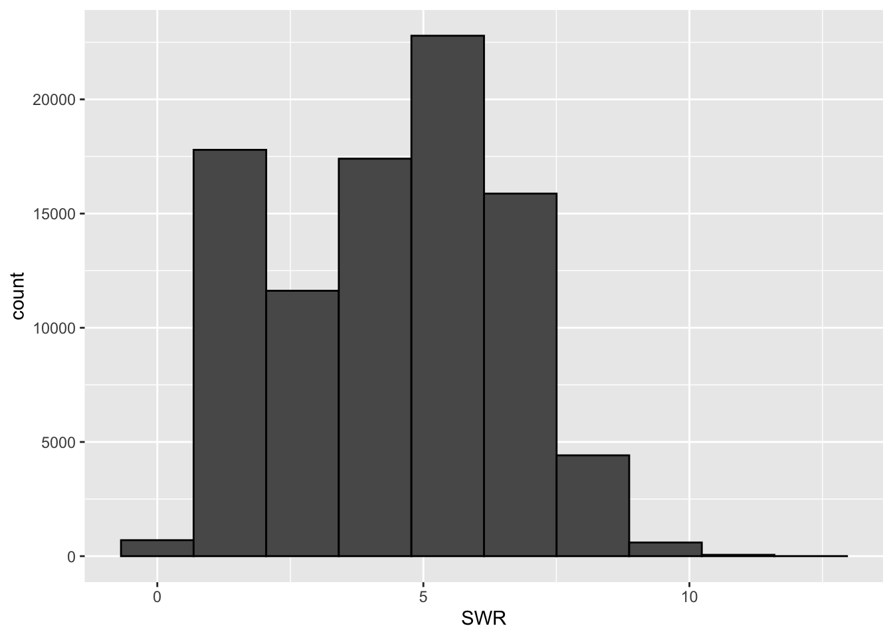
lifts %>% summarize(mean(SWR, na.rm = TRUE), min(SWR, na.rm = TRUE), max(SWR, na.rm = TRUE), sd(SWR, na.rm = TRUE))# A tibble: 1 × 4
`mean(SWR, na.rm = TRUE)` `min(SWR, na.rm = TRUE)` `max(SWR, na.rm = TRUE)`
<dbl> <dbl> <dbl>
1 4.42 0.183 12.5
# ℹ 1 more variable: `sd(SWR, na.rm = TRUE)` <dbl>- Write a good paragraph interpreting the plot and numerical summaries.
Strength-to-weight (SWR) ratio ranges from 0.18 to 12.46, with a mean SWR of 4.4. SWR varies about 2.08 units above and below the mean. We observe that most SWRs appear to be centered between 4 and 7, with a slight right-skew to the data. The distribution of SWRs appears to be unimodal.
Exercise 4: Data visualization - two quantitative variables
We’d like to visualize the relationship between body weight and the strength-to-weight ratio. A scatterplot (or informally, a “point cloud”) allows us to do this! The code below creates a scatterplot of body weight vs. SWR using ggplot().
# scatterplot
# The alpha = 0.5 in geom_point() adds transparency to the points
# to make them easier to see. You can make this smaller for more transparency
lifts %>%
ggplot(aes(x = BodyweightKg, y = SWR)) +
geom_point(alpha = 0.5)Warning: Removed 8752 rows containing missing values or values outside the scale range
(`geom_point()`).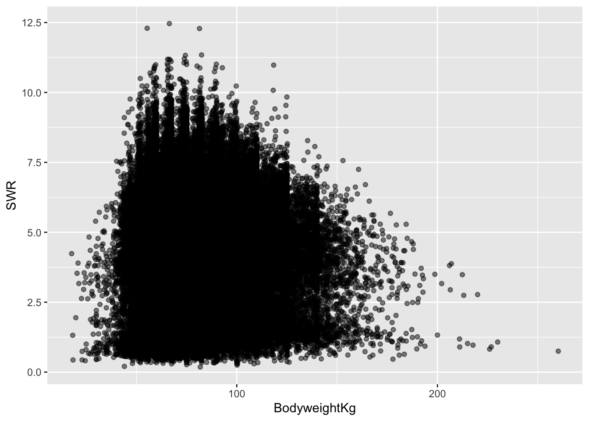
a & b. In our plot aesthetics, we now have two variables listed (an “x” and a “y”) as opposed to just a single variable. The “geom” for a scatterplot is geom_point. Otherwise, the code structure remains very similar!
- In general, it seems as though higher body weights are associated with lower SWRs. Once body weight (in kg) is greater than 50, the relationship between body weight and SWR appears to be weakly negative, and roughly linear. The points are very dispersed, indicating that there is a good amount of variation in this relationship (hence the term “weak”).
Exercise 5: Scatterplots - patterns in point clouds
Sometimes, it can be easier to see a pattern in a point cloud by adding a smoothing line to our scatterplots. The code below adapts the code in Exercise 4 to do this:
# scatterplot with smoothing line
lifts %>%
ggplot(aes(x = BodyweightKg, y = SWR)) +
geom_point(alpha = 0.5) +
geom_smooth()`geom_smooth()` using method = 'gam' and formula = 'y ~ s(x, bs = "cs")'Warning: Removed 8752 rows containing non-finite outside the scale range
(`stat_smooth()`).Warning: Removed 8752 rows containing missing values or values outside the scale range
(`geom_point()`).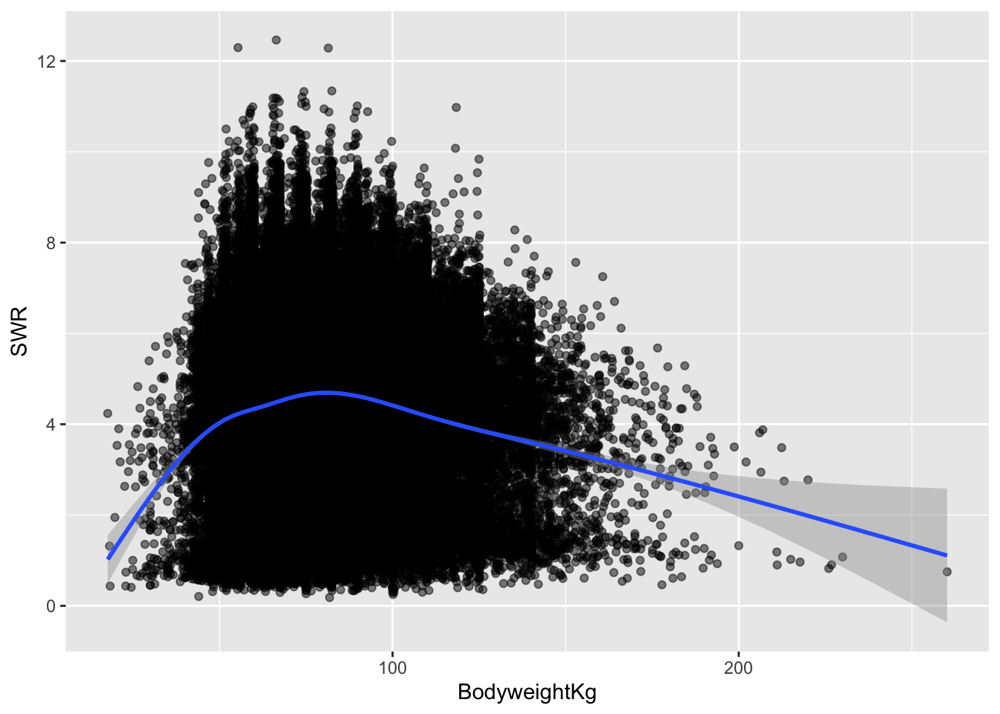
This doesn’t change my answer much (but it may have changed yours, and that’s okay!). It does appear as though there is a weakly negative relationship between body weight and SWR, particularly once body weight is above a certain value.
I would say that yes, a linear relationship here seems reasonable! Even though there is some curvature in the smoothed trend line early on, that is based on very few data points. Those data points with low body weights aren’t enough to convince me that the relationship couldn’t be roughly linear between body weight and SWR.
Exercise 6: Correlation
I would describe the correlation between body weight and SWR as weak and negative.
I’ll guess -0.1, since the line is negative, and the points are very dispersed around the line!
Exercise 7: Computing correlation in R
# correlation
# Note: the order in which you put your two quantitative variables into the cor
# function doesn't matter! Try switching them around to confirm this for yourself
# Because of the missing data, we need to include the use = "complete.obs" - otherwise the correlation would be computed as NA
lifts %>%
summarize(cor(SWR, BodyweightKg, use = "complete.obs"))# A tibble: 1 × 1
`cor(SWR, BodyweightKg, use = "complete.obs")`
<dbl>
1 -0.0392So close to our guess!
Exercise 8: Limitations of correlation
# correlation between x1, y1
anscombe %>% summarize(cor(x1, y1)) cor(x1, y1)
1 0.8164205# correlation between x2, y2
anscombe %>% summarize(cor(x2, y2)) cor(x2, y2)
1 0.8162365# correlation between x3, y3
anscombe %>% summarize(cor(x3, y3)) cor(x3, y3)
1 0.8162867# correlation between x4, y4
anscombe %>% summarize(cor(x4, y4)) cor(x4, y4)
1 0.8165214Each of these correlations are nearly the same!
Each of these correlations is relatively strong, and positive, since 0.8 is positive and closer to 1 than 0.
# scatterplot: x1, y1
anscombe %>%
ggplot(aes(x = x1, y = y1)) +
geom_point()
# scatterplot: x2, y2
anscombe %>%
ggplot(aes(x = x2, y = y2)) +
geom_point()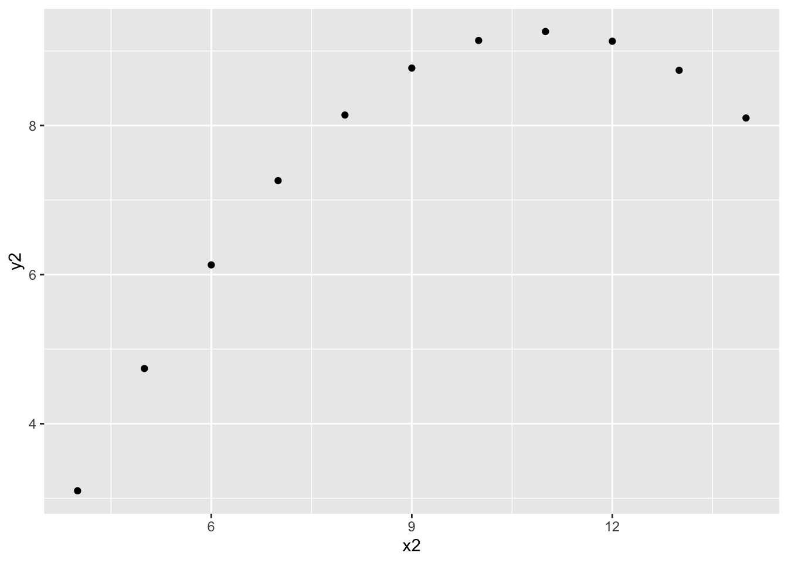
# scatterplot: x3, y3
anscombe %>%
ggplot(aes(x = x3, y = y3)) +
geom_point()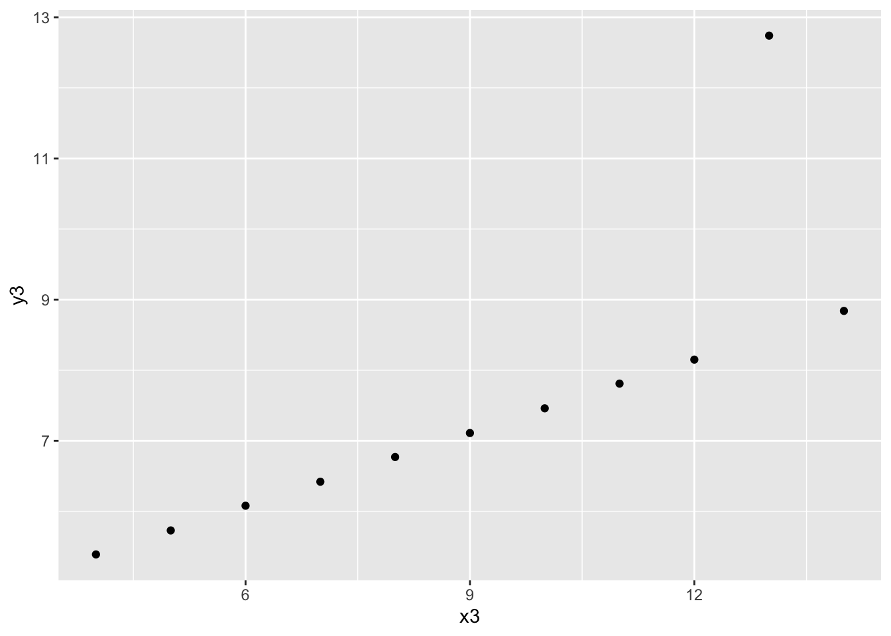
# scatterplot: x4, y4
anscombe %>%
ggplot(aes(x = x4, y = y4)) +
geom_point()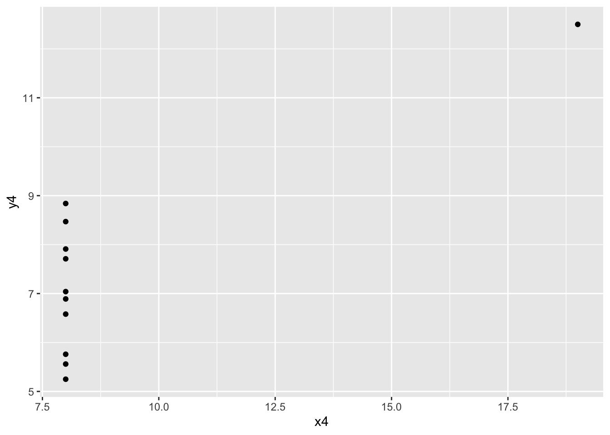
- The message of this exercise is that data visualization is important in addition to numerical summaries! Many different sets of points can have nearly the same correlation, but display very different patterns in point clouds upon closer inspection. Reporting correlation alone is not enough to summarize the relationship between two quantitative variables, and should be accompanied by a scatter plot!
Exercise 9: Lines of best fit (intuition for least squares)
# scatterplot with a fitted line, whose slope is 0.4 and intercept is 3
anscombe %>%
ggplot(aes(x = x1, y = y1)) +
geom_point() +
geom_abline(slope = 0.4, intercept = 3, col = "blue", size = 1)Warning: Using `size` aesthetic for lines was deprecated in ggplot2 3.4.0.
ℹ Please use `linewidth` instead.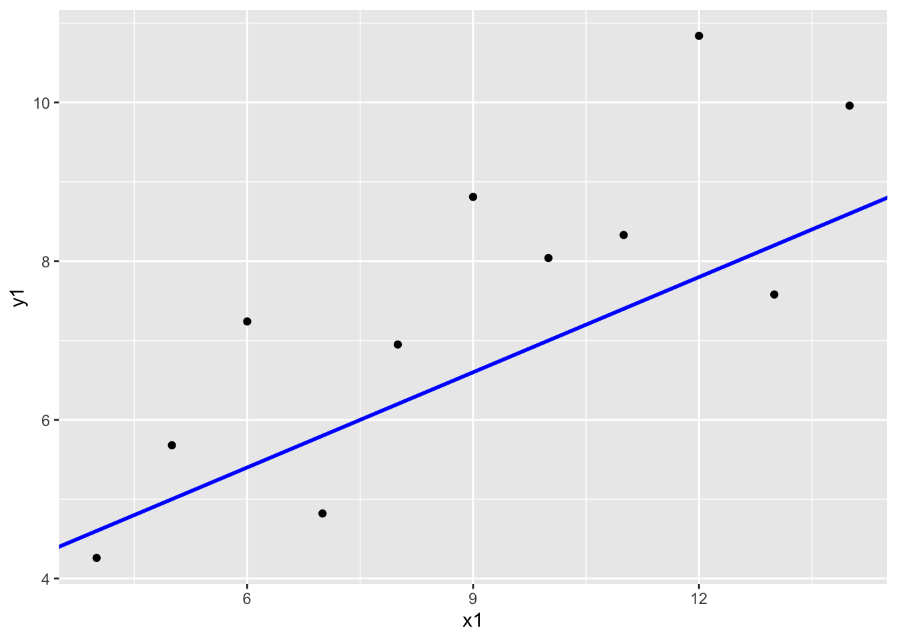
Describe the line that you see. Do you think the line is “good”? What are you using to define “good”?
Some things to think about:
- How many points are above the line?
- How many points are below the line?
- Are the distances of the points above and below the line roughly similar, or is there meaningful difference?
Now we’ll add another line to our plot. Which line do you think is better suited for this data? Why? Be specific!
# scatterplot with a fitted line, whose slope is 0.4 and intercept is 3
anscombe %>%
ggplot(aes(x = x1, y = y1)) +
geom_point() +
geom_abline(slope = 0.4, intercept = 3, col = "blue", size = 1) +
geom_abline(slope = 0.5, intercept = 4, col = "orange", size = 1)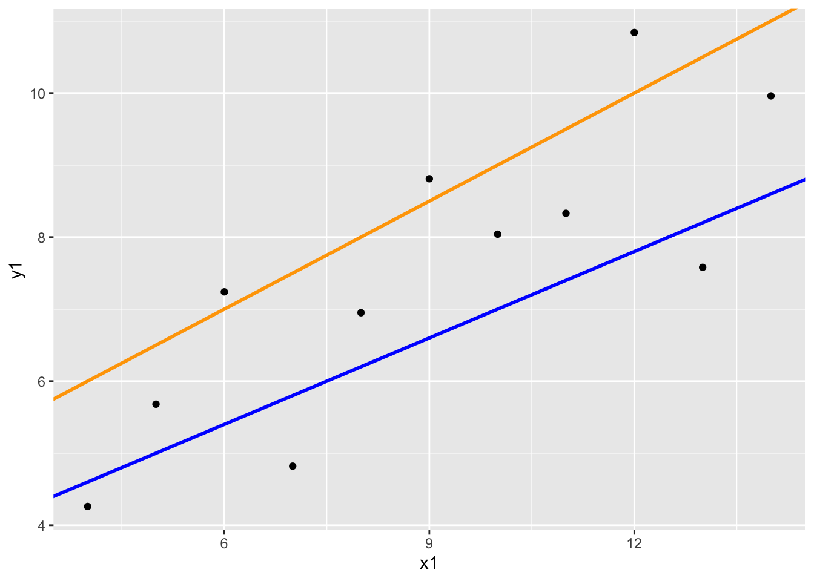
It’s usually quite simple to note when a line is bad, but more difficult to quantify when a line is a good fit for our data. Consider the following line:
# scatterplot with a fitted line, whose slope is 0.4 and intercept is 3
anscombe %>%
ggplot(aes(x = x1, y = y1)) +
geom_point() +
geom_abline(slope = -0.5, intercept = 10, col = "red", size = 1) 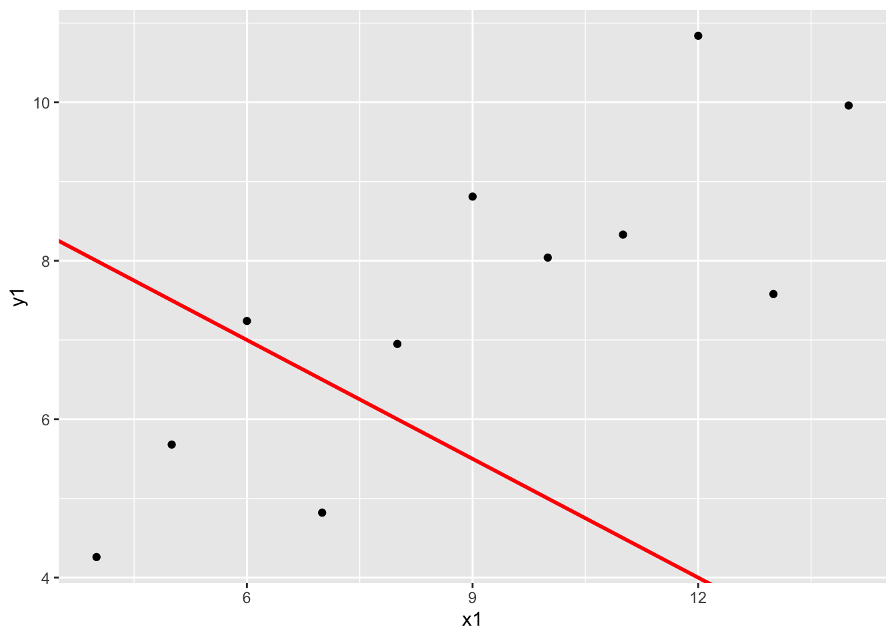
In the next activity, we’ll formalize the principle of least squares, which will give us one particular definition of a line of best fit that is commonly used in statistics! We’ll take advantage of the vertical distances between each point and the fitted line (residuals), which will help us define (mathematically) a line that best fits our data:
library(broom)
mod <- lm(y1 ~ x1, data = anscombe)
augment(mod) %>%
ggplot(aes(x = x1, y = y1)) +
geom_smooth(method = "lm", se = FALSE) +
geom_segment(aes(xend = x1, yend = .fitted), col = "red") +
geom_point()`geom_smooth()` using formula = 'y ~ x'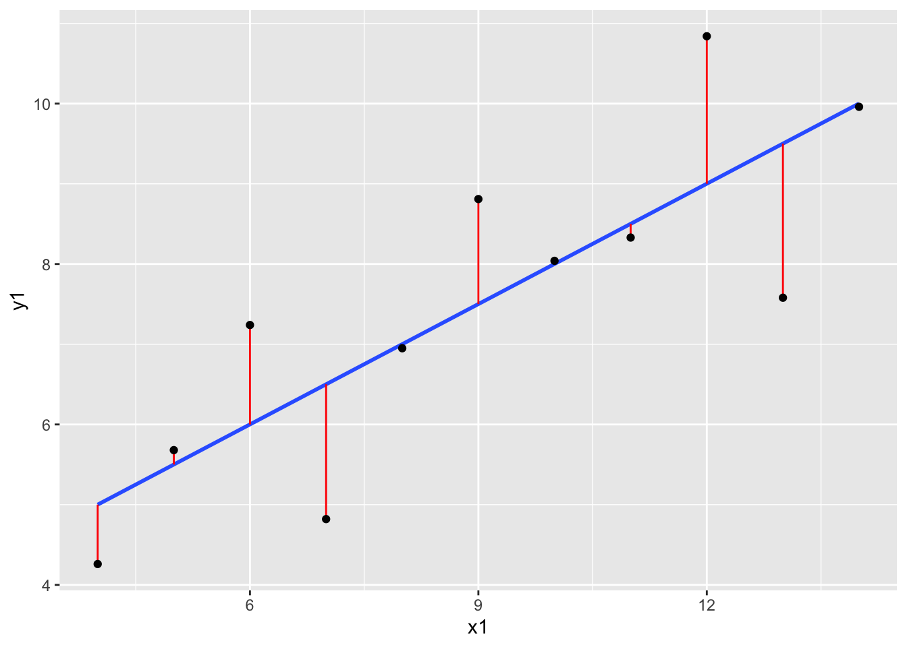
Exercise 10: Correlation and extreme values
# create a toy dataset
set.seed(1234)
x <- rnorm(100, mean = 5, sd = 2)
y <- -3 * x + rnorm(100, sd = 4)
dat <- data.frame(x = x, y = y)# scatterplot
dat %>%
ggplot(aes(x = x, y = y)) +
geom_point()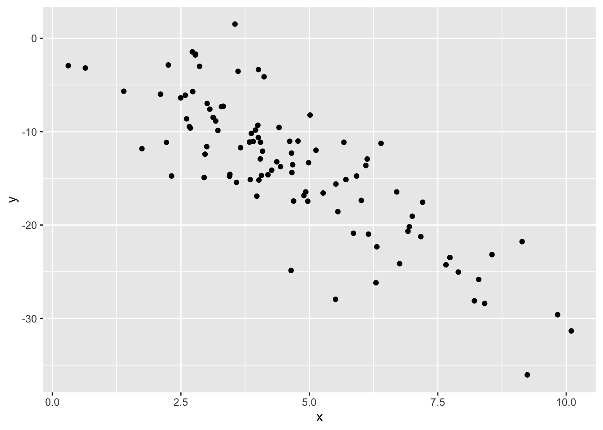
- The correlation between x and y is moderately strong and negative.
- I’ll guess -0.6, since the relationship is negative and is sort of in-between weak and strong.
# correlation
dat %>% summarize(cor(x, y)) cor(x, y)
1 -0.8295483# creating dat_new1
x1 <- c(x, 15)
y1 <- c(y, -45)
dat_new1 <- data.frame(x = x1, y = y1)# scatterplot
dat_new1 %>%
ggplot(aes(x1, y1)) +
geom_point()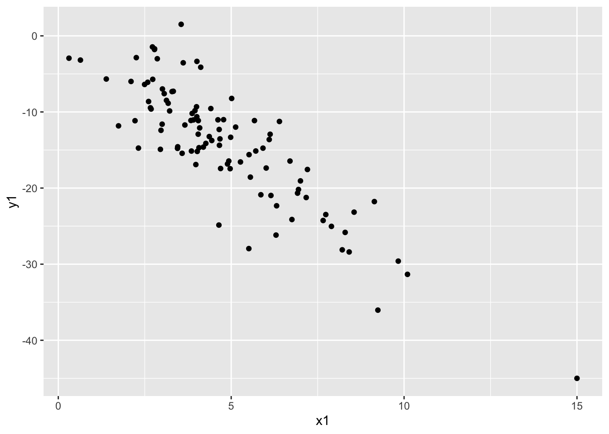
# correlation
dat %>% summarize(cor(x1, y1)) cor(x1, y1)
1 -0.8573567Our correlation stayed roughly the same with the addition of this new point!
# creating dat_new1
x2 <- c(x, 15)
y2 <- c(y, 45)
dat_new2 <- data.frame(x = x2, y = y2)# scatterplot
dat_new2 %>%
ggplot(aes(x2, y2)) +
geom_point()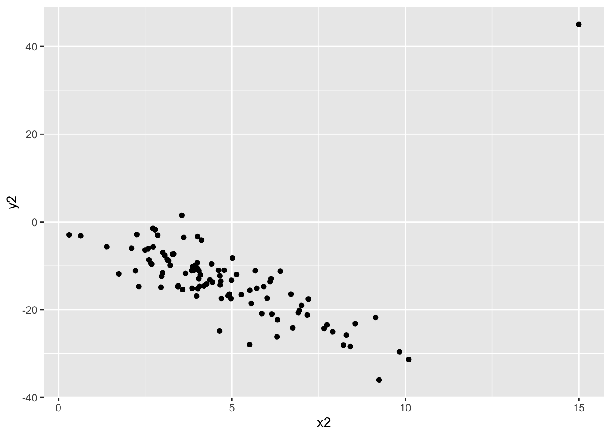
# correlation
dat_new2 %>% summarize(cor(x2, y2)) cor(x2, y2)
1 -0.2924792The correlation changes quite a bit with the addition of this new point! Something to note is that this new point does not follow the rough linear trend that the original points had, that the first point we considered adding also had. This line seems way off base, comparatively!
- The takeaway message here is that even though both of these additional points might be considered “outliers” because they have extreme x values, one changes the relationship between x and y much more than the other. In this case, the second point we considered would be influential because it changes the observed relationship between all x’s and y’s much more than the first point we considered. Not all “outliers” are considered equal!
dat_new1 %>%
ggplot(aes(x1, y1)) +
geom_point() +
geom_smooth(method = "lm", se = FALSE)`geom_smooth()` using formula = 'y ~ x'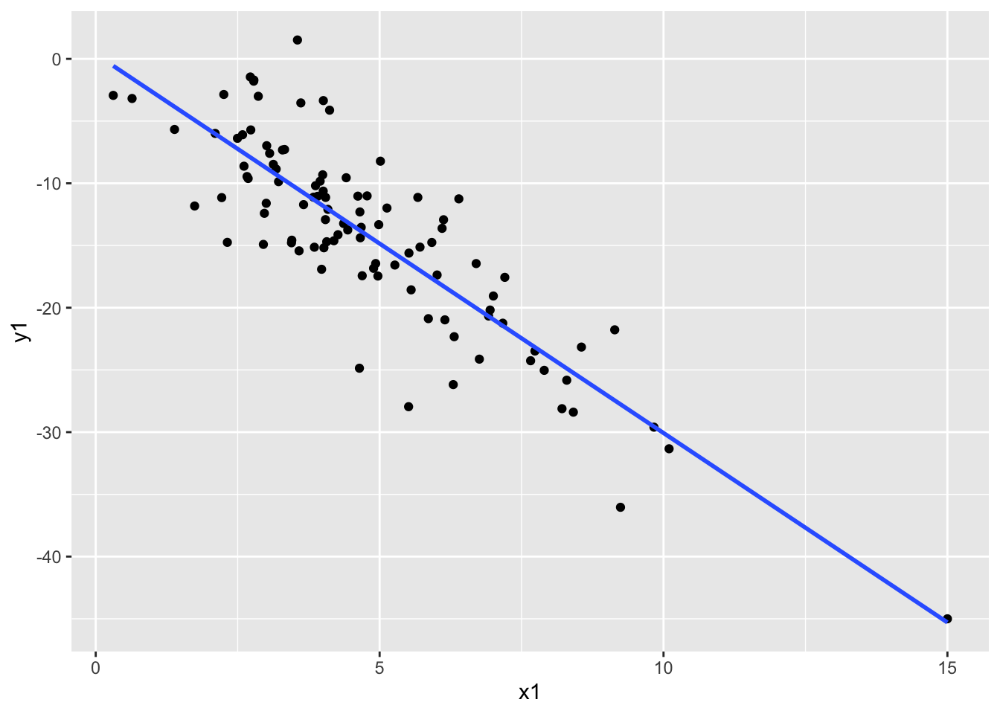
dat_new2 %>%
ggplot(aes(x2, y2)) +
geom_point() +
geom_smooth(method = "lm", se = FALSE)`geom_smooth()` using formula = 'y ~ x'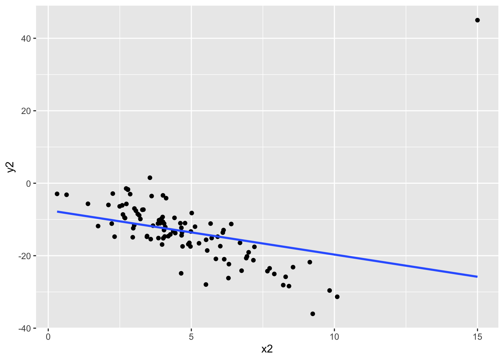